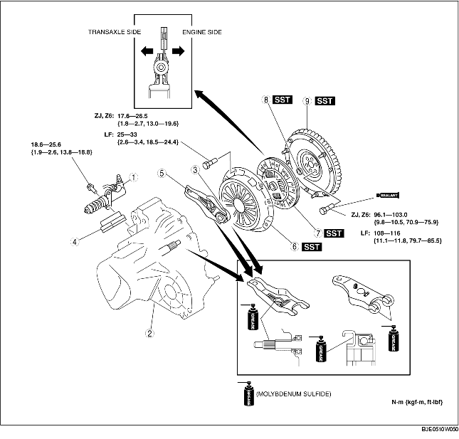

1. Remove in the order indicated in the table.
2. Install in the reverse order of removal.

.
|
1
|
Clutch release cylinder
|
|
2
|
Manual transaxle
|
|
3
|
Clutch release collar
|
|
4
|
Boot
|
|
5
|
Clutch release fork
|
|
6
|
Clutch cover
|
|
7
|
Clutch disc
|
|
8
|
Pilot bearing
(See Pilot Bearing Removal Note.)
|
|
9
|
Flywheel
(See Flywheel Removal Note.)
(See Flywheel Installation Note.)
|
1. Remove the fork supporter before disassembling the release fork.
1. Install the SSTs.
2. Loosen each bolt one turn at a time in a crisscross pattern until spring tension is released.
3. Remove the clutch cover and disc.
1. Use the SST to remove the pilot bearing.
1. Use the SSTs to install the pilot bearing.
ZJ, Z6
LF
1. Hold the flywheel using the SST.
2. Remove the bolts evenly and gradually in a crisscross pattern.
3. Remove the flywheel.
4. Inspect for oil leakage from the crankshaft rear oil seal.
1. Install the flywheel to the crankshaft.
2. When reusing the bolts, clean threads and hole, then apply locking compound to the threads.
3. Hand-tighten the flywheel lock bolts.
4. Install the SST to the flywheel.
5. Gradually tighten the flywheel lock bolts in a crisscross pattern.
1. Hold the clutch disc position using the SST.
1. Install the SSTs.
2. Tighten the bolts evenly and gradually in a crisscross pattern.